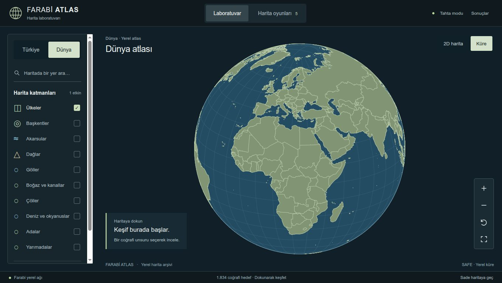
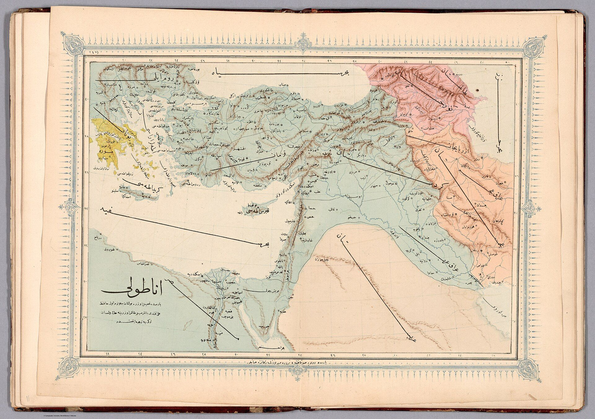
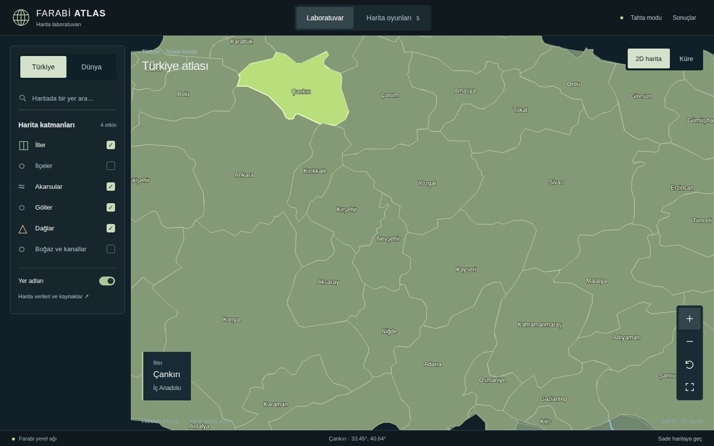
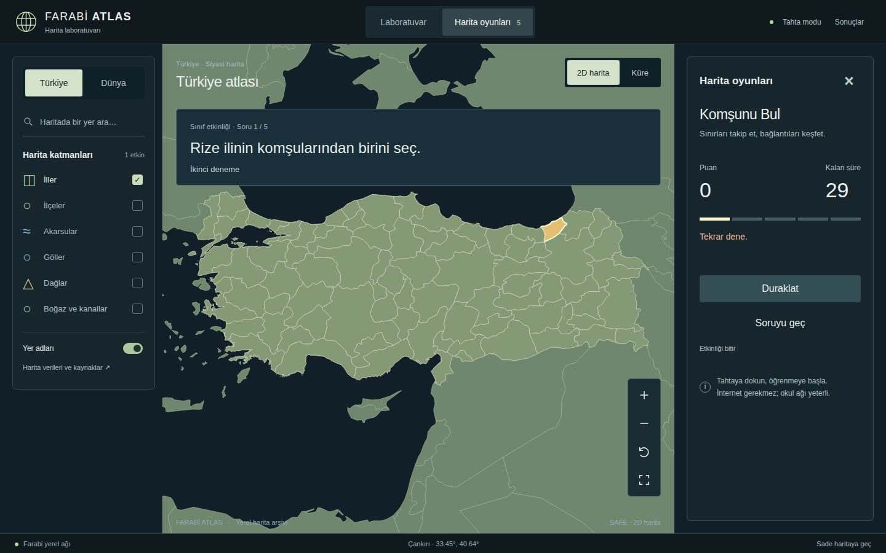
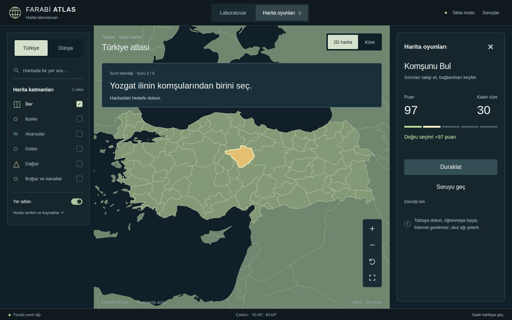
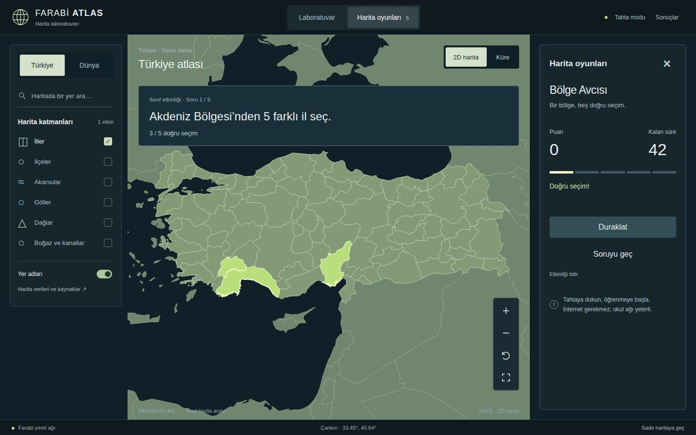
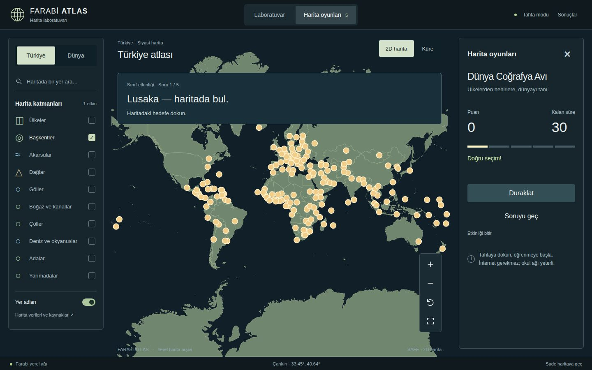
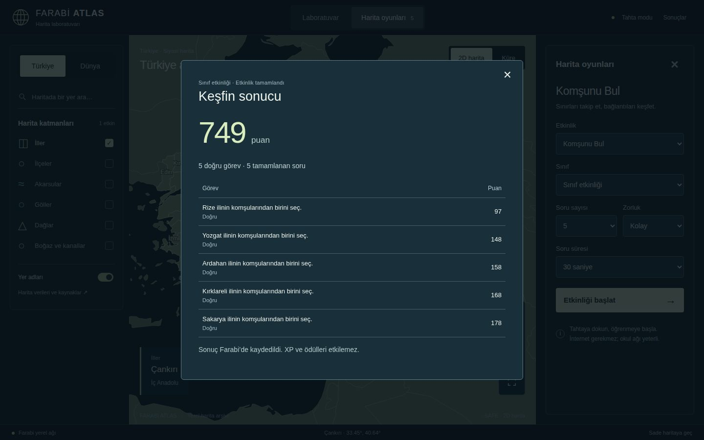
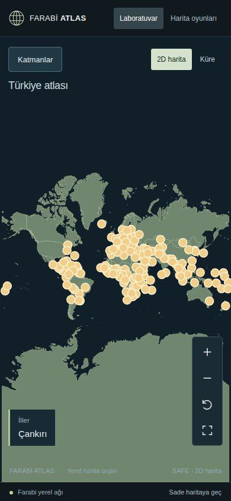

Farabi
Atlas
Akıllı tahtada internetsiz çalışan Türkiye ve dünya harita laboratuvarı. Beş sınıf oyunuyla, okulun kendi sunucusundan.
81 il973 ilçe1.834 coğrafi hedefinternet gerekmez

Çankırı’nın komşularını bul
Komşunu Bul oyunundan bir tur. Haritada Çankırı’ya sınırı olan altı ile dokun. İlk denemede doğru 100 puan, bir yanlıştan sonra 50 puan.
0 puan · 0/6 komşu
- ?
- ?
- ?
- ?
- ?
- ?
Tahtadaki oyunla aynı il sınırları: alpers/Turkey-Maps-GeoJSON, sadeleştirilmiş.

Beş oyun, tek harita
1868’de Hafız Ali Eşref Türkçe atlasını kitap olarak bastırdı. Farabi Atlas aynı paftayı tahtaya taşır: öğretmen oyunu, kategoriyi, soru sayısını, süreyi ve zorluğu seçer; sınıf haritaya dokunarak cevaplar.
Puanı tahta değil sunucu hesaplar. Bir soru iki yanlışla, süre bitince ya da pas geçilince kapanır.
- Türkiye’yi Bul— — — —
Çankırı — haritada bul.
İç Anadolu Bölgesi’nde, adı “Kır” ile başlayan ili bul.
81 il, üç zorluk.
- Komşunu Bul— — — —
Yozgat ilinin komşularından birini seç.
Komşuluk, gerçek sınır çizgisinden hesaplanır; yalnız köşe teması sayılmaz.
- Bölge Avcısı— — — —
Akdeniz Bölgesi’nden 5 farklı il seç.
Her doğru seçim haritada yeşile döner.
Yedi bölge.
- Dünya Coğrafya Avı— — — —
Japonya ülkesinin başkentini bul.
Ülkeler, başkentler, akarsular, dağlar, göller, çöller, denizler.
- Tarih Rotası— — — —
19 Mayıs 1919’da Mustafa Kemal’in ulaştığı şehri bul.
23 Nisan 1920’de TBMM’nin açıldığı ili bul.
- Puan fişi— — — —
İlk deneme doğru: 100
İkinci deneme doğru: 50
Kalan süre: en çok +50
Seri: en çok +50
Bir ders saatinde
Önce harita
Öğretmen Türkiye ile dünya arasında geçer, katmanları açar, bir ile dokunur.

Sonra soru
Oyun seçilir, soru tahtanın üstüne gelir: “Yozgat ilinin komşularından birini seç.”

Doğru dokunuş
Doğru il yeşile döner, kalan süre ve seri puana eklenir.

Bir bölge
Bölge Avcısı’nda beş il tek soruda toplanır; her seçim sayılır.

Dünyaya açılış
Aynı akış ülkeler, başkentler ve doğal unsurlar için.

Turun sonu
Her sorunun puanı tek tabloda. Sonuç okul sunucusunda kalır.

Telefonda da
Okul ağındaki bir telefon ya da tablet aynı adresi açar.

Neden Farabi Atlas
Tahtalarımız i3 işlemcili, 3,8 GB belleklidir; bir kısmının ekran kartı yoktur. İnternet okulda her zaman güvenilir değildir. Harita uygulamalarının çoğu bu iki koşuldan birinde takılıyordu.
Farabi Atlas bu yüzden okulun kendi sunucusundan çalışır. Haritaların, soruların ve sonuçların hepsi yerel ağdadır; açılışta ekran kartı gerektirmeyen bir küre çizilir, güçlü cihazda WebGL motoruna geçilebilir.
Öğrenci adı, numarası ya da hesabı tutulmaz. Tahta ortak bir etkinlik ekranıdır: sınıf birlikte oynar, sonuç sınıfındır.
Kaynak kod ve harita verisi herkese açıktır. Kendi okulunuzun sunucusunda kurabilirsiniz.
Atakan ÜnverFarabi’yi hazırlayan
Kurulum ve sorular
- Sunucu: Python ve FastAPI, kendi SQLite dosyası
- Arayüz: TypeScript ve Vite, D3 küre, MapLibre
- Tahtada: yalnızca bir tarayıcı, adres
/kure/
İnternet bağlantısı gerekir mi?
Hayır. Harita dosyaları, sorular ve yazı tipleri sunucudadır; çalışırken hiçbir dış adrese istek gitmez. İnternet yalnızca geliştirme ve ilk veri indirme için gerekir.
Ekran kartı olmayan tahtada çalışır mı?
Evet. Açılış görünümü SVG küredir ve GPU istemez. WebGL motoru ayrıca seçilebilir; hata verirse uygulama sade haritaya döner.
Öğrenci verisi tutuluyor mu?
Hayır. Yalnızca oyun oturumu, sınıf etkinliği adı ve puan kaydedilir. Okulun öğrenci, öğretmen ya da ödül kayıtlarına erişilmez.
Puanı kim hesaplar?
Sunucu. Tahta yalnızca dokunulan yeri gönderir; hedefler tahtaya hiç gösterilmez, böylece puan elle değiştirilemez.
Harita verileri nereden geliyor?
Dünya ve doğal unsurlar Natural Earth (kamu malı), iller alpers/Turkey-Maps-GeoJSON (Apache-2.0), ilçeler geoBoundaries TUR ADM2 2021 (ODbL-1.0). Kaynakların SHA-256 değerleri depodaki manifest dosyasındadır.
Kendi okulumda nasıl kurarım?
npm ci
python3 -m venv .venv
.venv/bin/pip install -r requirements-build.txt
npm run build
ATLAS_STANDALONE=1 ATLAS_DB=var/atlas.db \
.venv/bin/uvicorn backend.server:standalone \
--factory --host 0.0.0.0 --port 8099